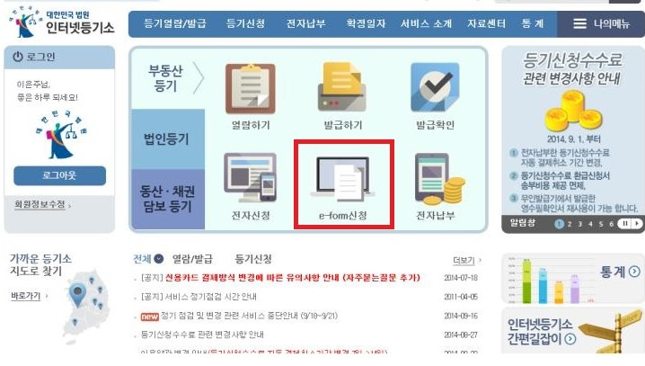
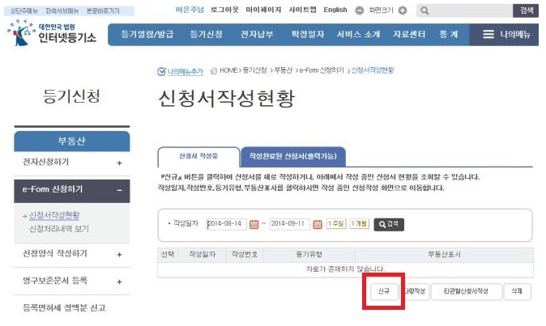
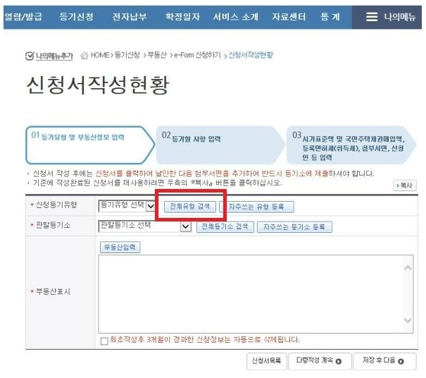
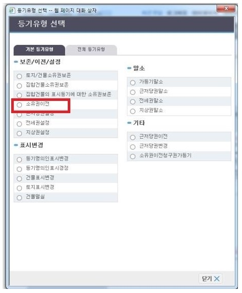
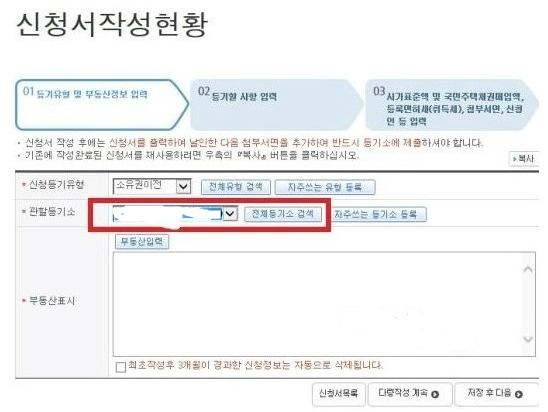
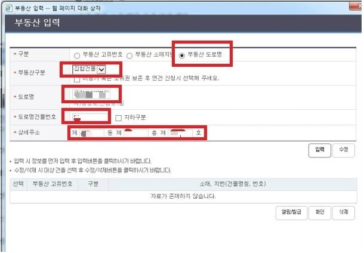
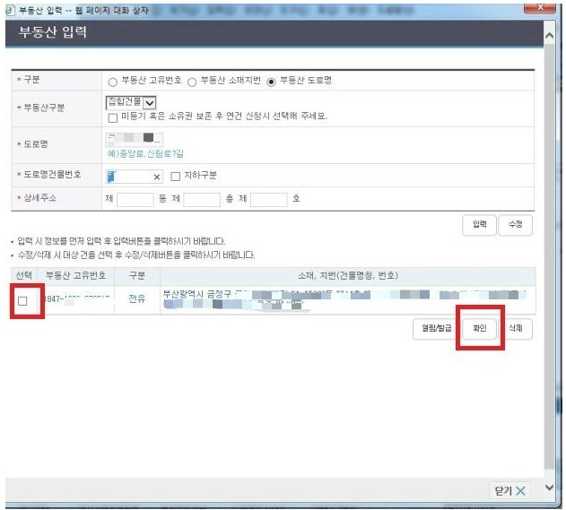
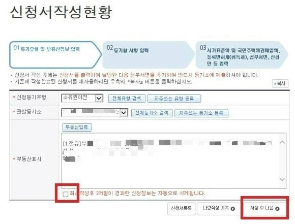

접속 후 e-form으로 신청하기를 클릭하시면
다음과 같은 화면이 나옵니다.

그리고 신규 버튼을 누르시고 입력하시면 됩니다.

전체 유형 검색하셔서 선택하시면 됩니다.

다음은 이렇게 뜨게 되는데 소유권 이전에 의한 매매라 소유권 이전을 클릭하세요.

관할 등기소 입력하시면 됩니다.(부동산 소재지 등기소 선택)
그리고 부동산 입력버튼 누르면

새 창이 뜨는데 구분에 부동산 고유번호, 소재지번, 도로명 아무거나 입력하시고
아파트니 집합 건물 선택하시고 입력 누르시면

부동산 정보가 뜨게 됩니다.
맞으시면 확인 누르시고 체크하시면 됩니다.

그러면 이렇게 부동산 정보가 저절로 뜨게 됩니다.
저장 후 다음 버튼을 누르세요.